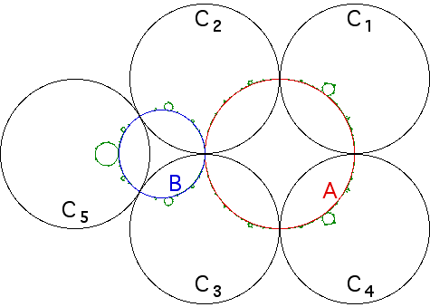

Here is a different arrangement of five inverting circles.
The circles C1, C2, C3, and C4 have a common circle, A, orthogonal to all four.
So as we have seen, A is the limit set generated by inversion in these four circles.
Consequently, A belongs to
Similarly, the circle B is orthogonal to the three circles C2, C3, and C5, and so the limit set of inversion in these three circles is B.
Consequently,
For example, I5(A) belongs to the limit set, as do I1(B) and I4(B), and so on.
We include this example, to see if the general shape looks familiar.
|  |
Return to Limit Sets and Inversion.